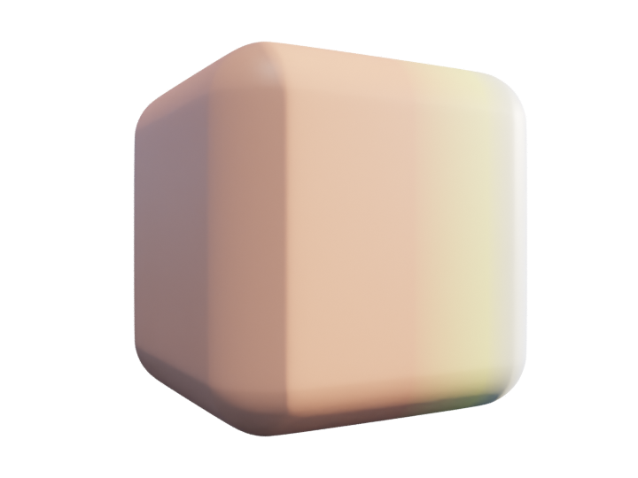

Layer Type · Adjustment
Non-destructive colour grading — tweak everything below without touching a pixel, and route the adjustment to any channel, not just colour.

A Hue/Saturation adjustment grading the layers beneath it.
An adjustment layer sits on top of the stack and re-grades whatever shows through it — like a Photoshop adjustment layer. Nothing underneath is altered; hide the adjustment and the original is back.
The twist: you can aim it at any PBR channel. Drop the roughness of everything below by 20%, or shift only the metallic — not just the colour.
Four Adjustments
Shift hue, push or pull saturation and value across the stack.
Lift or crush the whole material in one slider.
Photoshop-style input/output + gamma remap for precise control.
Warm the shadows, cool the highlights — cinematic colour shifts.
In practice